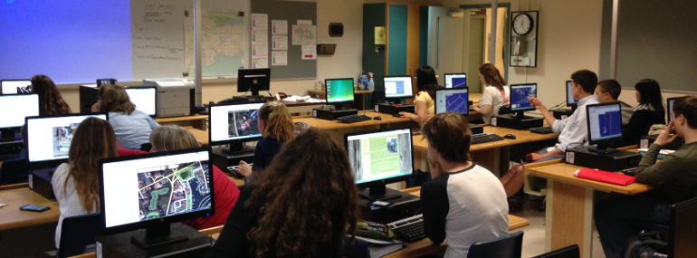

Blog Posts
Welcome our new Communications and Outreach intern, Emma Gray!

Roads as Collaborative Corridors

Intern with TeachOSM this school year!

Shaking Up Earth Science with OSM

Launching the TeachOSM Collaboration Grants

A New Way to Get Involved with TeachOSM

What is State of the Map US?

Welcome to our newest communications & outreach intern, Hayden MacLachlan!

Transformando la educación universitaria con OpenStreetMap

Transforming university education through OpenStreetMap

¡Produzcamos mapas, en lugar de consumir mapas!

Instead of consuming maps, let’s produce maps!

Join us in welcoming Maya Lovo, our new intern!

MapSaintLucia - a Community Development Roadmap

TeachOSM on Cape Cod

GIS Day Farmers Market Mapping Project

Conducting Street-level Surveys in DC
OSM at George Washington University

Georgia Avenue Mapping